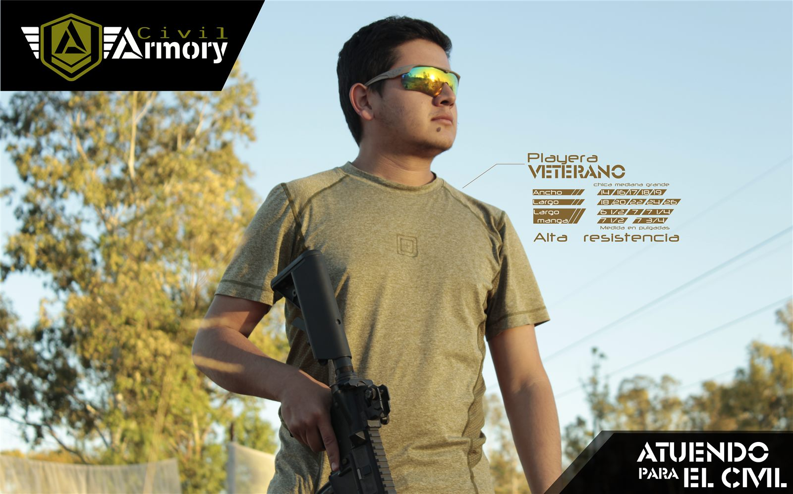

TINTA · TELA · OBJETO
La marca se imprime.
Del registro de color al objeto: playeras, tazas y manuales de Civil Armory y Artesano Digital, con el taller como centro.
Ver pliegos ↓MEDIOS IMPRESOS
El papel y la tela se tocan.
Este archivo reúne la impresión de dos marcas: Civil Armory y Artesano Digital. Primero la marca impresa, luego la pieza y al final el taller: serigrafía, sublimación, vinil y registro de color.
PLIEGOS, PRENDAS Y OBJETOS
Treinta y siete impresos.
La tinta se seca.
La marca se queda.